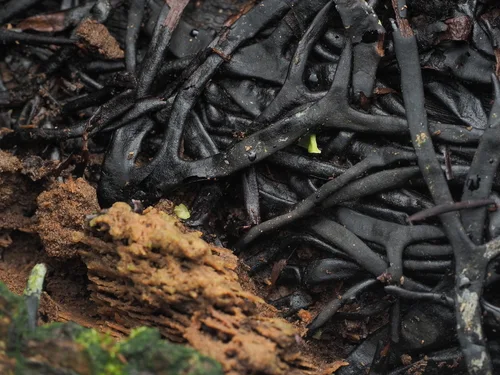

Plant root problems

Soft, rotting rootsCheck the cachepot for standing water. Compare firm roots with sections whose outer layer slips off at a touch.

Fungal growth or mushrooms on potting mixCheck whether growth is confined to the potting mix or reaches the base of the stem. Look at the condition of the newest leaves.

Distorted rootsLook for roots circling the pot, forks near a hard obstruction, or swellings within the root tissue. Include a ruler in a photograph.

Gray crusts turning charcoal-black at a tree baseLow, flat growth at a root flare is easy to overlook beside showier shelf fungi. Its position puts the supporting base of the tree at issue, even if foliage remains green.

Dark shoestring-like cords at the root collarDark cords around roots are a different clue from mushrooms in a lawn. Trace what they are attached to before deciding whether a nearby tree is involved or only buried wood is being colonized.

Club-shaped roots on wilting brassicasA wilting cabbage with damp soil under it deserves a root check before another watering. A distorted root system can leave the plant short of water even when its bed is moist.

Onion and garlic bases with white felt and black grainsWhen onions or garlic yellow in a patch, lift one declining plant with its bulb intact. The side where the roots join the bulb is the most informative place to look for white rot.

Black crusts that cling to potato skinA harvested potato can look dirty even after a careful rinse. Inspect individual black crusts on the skin and compare them with the loose soil that washes away from the eyes.

Corky pits or raised scabs in potato skinThe lesions of common scab are part of the potato skin itself. They may be shallow and rough, distinctly raised, or pitted, so several tubers from one hill need not look identical.

Silvery patches on stored potato skinsA smooth patch that flashes silver when a potato is wet can point to silver scurf. The reflective appearance comes from changes in the skin, so the angle of the light matters.

Blue-green mold beneath garlic bulb wrappersA garlic head can look intact while one clove beneath the dry wrapper is shriveled and moldy. Check stored bulbs before separating cloves for autumn planting, especially where harvest or handling left bruises.

Small knots formed within feeder rootsWhen a vegetable stays small despite watering, inspect a declining plant before it dies. Root-knot nematodes can cause swellings along fine roots, leaving a plant poorly equipped to take up water during afternoon heat.

Pale-edged conks low on conifer stumps and rootsIf declining conifers could fall on a path or building, stay outside their reach. Record the location for a qualified arborist.

Yellow-rimmed rosettes beside conifer rootsA low rosette beside a conifer can grow from a woody root below the soil. Young velvet-top fruiting bodies often have a bright yellow growing edge around a darker, soft-looking center.

A yellow foamy patch on mulch around the plantAfter wet weather a bright, cushion-like mass can appear almost overnight. Look underneath before assuming the roots are decaying.